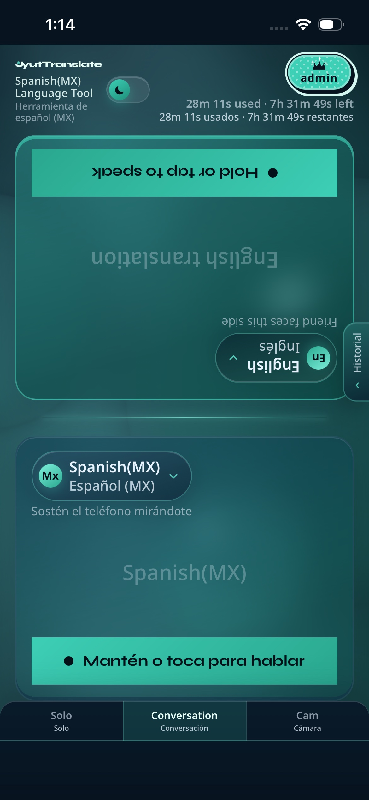

Conversation · Spanish (MX) primary
Face-to-face — in your locale.
Primary Spanish (MX) → Conversation as Herramienta de español (MX) — your side and speak prompts localize.

JyutTranslate
Start Conversation
Primary Spanish (MX) → Conversation as Herramienta de español (MX) — your side and speak prompts localize.
